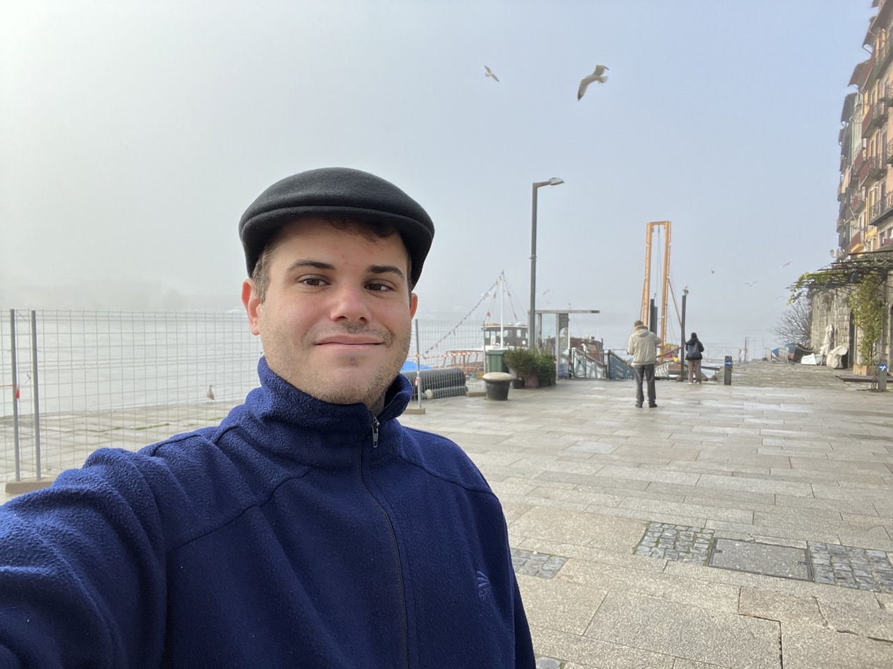

About Me
Heitor Cazado
I am from Brazil but moving to Argentina. I was born in 1993, am single and I love to travel and visit new places, also to learn new languages. I'm not an entire life member of the Church, in fact, I was baptized in February of 2022. My first degree was an associate in programming and systems analysis, followed by a, MD medicine degree which I'm still taking.
Hobbies
As mentioned before, I love to learn new languages and travel. Also, I like to play guitar and mechanics, also I love to dance the tango.